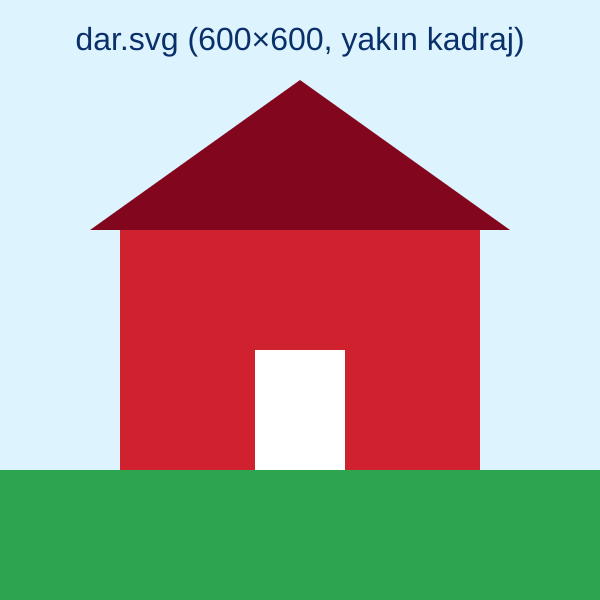

Köy Evleri Fotoğraf Sergisi

Geniş ekranda manzaranın tamamı, dar ekranda ise evin yakın kadrajı gösterilir. Tarayıcı, media koşulu sağlanan ilk <source> öğesini seçer; hiçbiri sağlanmazsa <img> kullanılır.

Geniş ekranda manzaranın tamamı, dar ekranda ise evin yakın kadrajı gösterilir. Tarayıcı, media koşulu sağlanan ilk <source> öğesini seçer; hiçbiri sağlanmazsa <img> kullanılır.